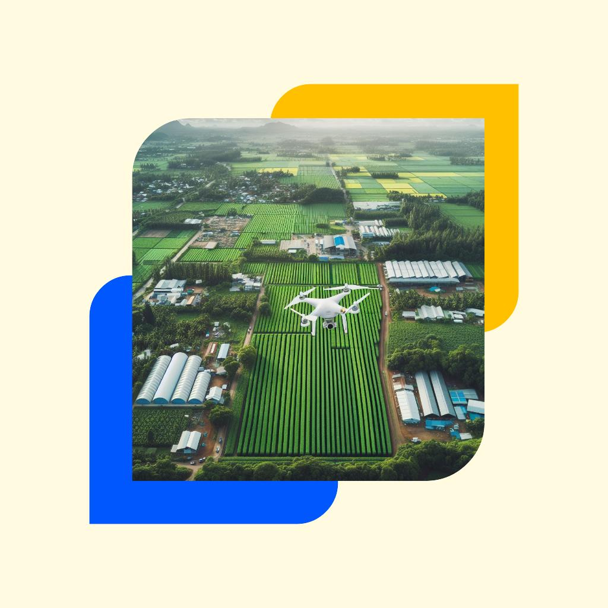

1. Introduction#
Continuous advancements in Unmanned Aerial Vehicle (UAV) technology have broadened its applications in agriculture. These innovations play a crucial role in fostering sustainable solutions and influencing policies and decisions in agriculture. However, the regulatory framework for UAV flights and the development of standardized protocols for precise data capture are continuously evolving. It is imperative to uphold accurate data quality for synergizing multiyear data and other spectral sensors (satellites, drones, lab sensors. To maintain high standards, some essential steps were proposed.
2. Pre planning#
2.1. Flight planning#
To carry successful drone surveys, a strategic flight planning is required. Coordinate with the project representative to establish suitable flight parameters, including spatial resolution, date, and additional ancillary measurements.
List the equipment required for the survey.
Select clearly identifiable ground control point (GCP) locations within the survey area, essential for referencing UAV products.
2.2. Weather forecasting#
Verify the weather forecast before initiating the survey. Increasing availability atmosphere data from multiple satellites enables to predict accurate weather prediction for drone campaigns.
Accessing weather information from ECMWF forecasts and Meteosat imagery allows the user to view up to two synchronised loops of the products.
If possible, obtain local/in-situ weather conditions (cloud cover, wind etc.) from the site person.
2.3. Site and risk assessment and permissions#
The pilot should identify the site using given coordinates in Google earth Maps or ArcGIS.
Identify geographical features (big trees, bird conservation parks, tall building, electric polls/wires) around the survey area which might affect the data (electromagnetic interference) and flight planning.
Identify possible hazards within the survey area.
The restrictions (permanent and temporary) over the site should be checked.
To ensure lawful and ethical operations, the site permission should be obtained from the project representative/ site manager.
2.4. Flight survey time#
Record the site conditions in the logbook before initiating the drone flight.
Check the GPS/GNSS quality, ensuring a minimum of 5 satellites are available.
Place the GCP targets in pre-defined locations.
Ensure sensors lens is clean if not clean with a lens tissue.
Turn ON instruments, especially the spectral camera, 15 minutes before collecting actual measurements.
Ensure that a clean calibration target should be used for the calibration.
It is advisable to record the calibration target before after the survey. If the survey area is big, additional measurements are required.
Record essential parameters in metadata sheet (Table 1) and logbook.
2.5. Ancillary measurements to support UAV acquisitions.#
Calculating accurate surface reflectance values are essential in various applications and to synergies with other data. To support this, additional measurements can be conducted.
Field spectroradiometer
Simultaneously with the drone flight, ground spectral measurements can be acquired using a spectroradiometer to align with drone spectral data.
Downwelling solar radiation can be captured with a spectroradiometer, utilizing a sensor fiber attached to a cosine receptor and positioned upward with a tripod.
Sun photometer for measuring aerosol optical thickness.
3. Data management#
After the drone flight, cross checking is performed to ensure detailed metadata is recorded, and data is stored in an appropriately. Effective data management is crucial for subsequent analysis.
Visual evaluation of images is necessary to identify undesirable aspects such as blurry images (RGB), illumination variations, and naming issues.
4. Data processing piepleines#
4.1. Reading files#
Raw multispectral images (Digital Numbers) can be read using the following code:
import numpy as np
import cv2
import matplotlib.pyplot as plt
import os
import rasterio as rio
%matplotlib inline
# Read Multispectral/hyperspectral data
multi = rio.open('/example.tif')
multi_array = multi.read()
---------------------------------------------------------------------------
ModuleNotFoundError Traceback (most recent call last)
Cell In[1], line 2
1 import numpy as np
----> 2 import cv2
3 import matplotlib.pyplot as plt
4 import os
ModuleNotFoundError: No module named 'cv2'
Converting Digital numbers to Radiance#
# Fixing random state for reproducibility
np.random.seed(19680801)
N = 10
data = [np.logspace(0, 1, 100) + np.random.randn(100) + ii for ii in range(N)]
data = np.array(data).T
cmap = plt.cm.coolwarm
rcParams['axes.prop_cycle'] = cycler(color=cmap(np.linspace(0, 1, N)))
from matplotlib.lines import Line2D
custom_lines = [Line2D([0], [0], color=cmap(0.), lw=4),
Line2D([0], [0], color=cmap(.5), lw=4),
Line2D([0], [0], color=cmap(1.), lw=4)]
fig, ax = plt.subplots(figsize=(10, 5))
lines = ax.plot(data)
ax.legend(custom_lines, ['Cold', 'Medium', 'Hot']);
There is a lot more that you can do with outputs (such as including interactive outputs) with your book. For more information about this, see the Jupyter Book documentation